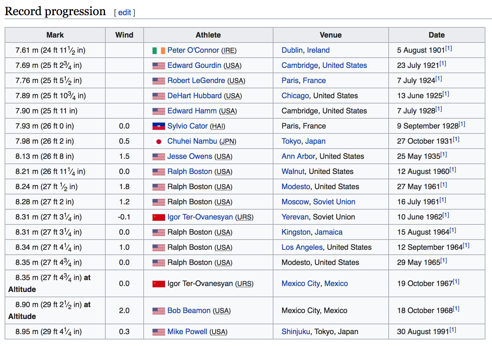

19 Data Cleaning
In this application we are going to work with the Men’s Long Jump World Record Progression data from wikipedia (see screenshot below).
https://en.wikipedia.org/wiki/Men%27s_long_jump_world_record_progression#Low_altitude_record_progression_1965%E2%80%931991
19.1 Import Data
To import the data of the Record Progression table you can use a couple of functions from the package rvest.
library(rvest)
wiki_jump <- 'https://en.wikipedia.org/wiki/Men%27s_long_jump_world_record_progression'
long_jump <- read_html(wiki_jump)
tbl <- html_table(html_node(long_jump, 'table'))The function read_html() reads the html file of the wikipedia page. This will produce an object of type "xml_document" which we can further manipulate with other functions in "rvest".
Because the Record progression data is in an html table node, you can use html_node() to locate such table in the XML document. And then extract it with html_table().
str(tbl, vec.len = 1)tibble [18 × 5] (S3: tbl_df/tbl/data.frame)
$ Mark : chr [1:18] "7.61 m (24 ft 11 1⁄2 in)" ...
$ Wind : num [1:18] NA NA ...
$ Athlete: chr [1:18] "Peter O'Connor (IRE)" ...
$ Venue : chr [1:18] "Dublin, Ireland" ...
$ Date : chr [1:18] "5 August 1901[1]" ...As you can tell, the extracted table tbl is a data frame with 18 rows and 5 columns.
19.2 Extracting Meters
The first task consists of looking at the values in column Mark, and find how to retrieve the distance values expressed in meters. For example, the first element in Mark is:
tbl$Mark[1][1] "7.61 m (24 ft 11 1⁄2 in)"The goal is to obtain the number 7.61. One way to achieve this task is via the substr() function.
substr(tbl$Mark[1], start = 1, stop = 4)[1] "7.61"We can do that for the entire vector:
meters <- substr(tbl$Mark, start = 1, stop = 4)
meters [1] "7.61" "7.69" "7.76" "7.89" "7.90" "7.93" "7.98" "8.13" "8.21" "8.24"
[11] "8.28" "8.31" "8.31" "8.34" "8.35" "8.35" "8.90" "8.95"Notice that the meter values are not really numeric but character. In order to have meters as numbers, we should coerce them with as.numeric()
meters <- as.numeric(substr(tbl$Mark, start = 1, stop = 4))
meters [1] 7.61 7.69 7.76 7.89 7.90 7.93 7.98 8.13 8.21 8.24 8.28 8.31 8.31 8.34 8.35
[16] 8.35 8.90 8.95Extracting Meters with Regular Expressions
Instead of using the function substr() to obtain the distance values, let’s see how to achieve the same task using regular expressions. To do this we must determine a pattern to be matched. So, what is the pattern that all the distance values (in meters) have in common?
mark1 <- tbl$Mark[1]
mark1[1] "7.61 m (24 ft 11 1⁄2 in)"If you look at the Mark content, you will notice that the target pattern is formed by: a digit, followed by a dot, followed by two digits. Such pattern can be codified as: "[0-9]\\.[0-9][0-9]". So let’s test it and see if there’s match:
str_detect(mark1, pattern = "[0-9]\\.[0-9][0-9]")[1] TRUETo extract the distance pattern we use str_extract()
str_extract(mark1, pattern = "[0-9]\\.[0-9][0-9]")[1] "7.61"And then we can apply it on the entire column to get:
str_extract(tbl$Mark, pattern = "[0-9]\\.[0-9][0-9]") [1] "7.61" "7.69" "7.76" "7.89" "7.90" "7.93" "7.98" "8.13" "8.21" "8.24"
[11] "8.28" "8.31" "8.31" "8.34" "8.35" "8.35" "8.90" "8.95"19.3 Extracting Country
Consider the column Athlete. The first value corresponds to Petter O'Connor from Ireland.
tbl$Athlete[1][1] "Peter O'Connor (IRE)"Let’s create a vector peter for this athlete:
peter <- tbl$Athlete[1]How can we get the country abbreviation?
substr(peter, nchar(peter)-4, nchar(peter))[1] "(IRE)"That works but it is preferable to exclude the parentheses, that is, the third to last character, as well as the last character:
substr(peter, nchar(peter)-3, nchar(peter)-1)[1] "IRE"Now we can apply the substr() command with all the athletes:
# extract country
substr(tbl$Athlete, nchar(tbl$Athlete)-4, nchar(tbl$Athlete)) [1] "(IRE)" "(USA)" "(USA)" "(USA)" "(USA)" "(HAI)" "(JPN)" "(USA)" "(USA)"
[10] "(USA)" "(USA)" "(URS)" "(USA)" "(USA)" "(USA)" "(URS)" "(USA)" "(USA)"country <- substr(tbl$Athlete, nchar(tbl$Athlete)-3, nchar(tbl$Athlete)-1)
country [1] "IRE" "USA" "USA" "USA" "USA" "HAI" "JPN" "USA" "USA" "USA" "USA" "URS"
[13] "USA" "USA" "USA" "URS" "USA" "USA"19.4 Cleaning Dates
Now let’s consider tha values in column Date:
# first 5 dates
tbl$Date[1:5][1] "5 August 1901[1]" "23 July 1921[1]" "7 July 1924[1]" "13 June 1925[1]"
[5] "7 July 1928[1]" Notice that all the date values are formed by the day-number, the name of the month, the year, and then the characters [1]. Obviously we don’t need those last three characters [1].
date1 <- tbl$Date[1]
date1[1] "5 August 1901[1]"First let’s see how to match the pattern [1]. Perhaps the first option that an inexperience user would try is:
str_detect(date1, pattern = "[1]")[1] TRUEAccording to str_detect(), there’s is a match, so let’s see what exactly "[1]" is matching:
str_match(date1, pattern = "[1]") [,1]
[1,] "1" Mmmm, not quite right. We are matching the character "1" but not "[1]". Why? Because brackets are metacharacters. So in order to match brackets as brackets we need to escape them:
str_match(date1, pattern = "\\[1\\]") [,1]
[1,] "[1]"Now we are talking. The next step involves using str_replace() to match the pattern "\\[1\\]" and replace it with an empty string "":
str_replace(date1, pattern = "\\[1\\]", replacement = "")[1] "5 August 1901"Then, we can get an entire vector of clean dates:
# clean dates
dates <- str_replace(tbl$Date, pattern = "\\[1\\]", replacement = "")
dates [1] "5 August 1901" "23 July 1921" "7 July 1924"
[4] "13 June 1925" "7 July 1928" "9 September 1928"
[7] "27 October 1931" "25 May 1935" "12 August 1960"
[10] "27 May 1961" "16 July 1961" "10 June 1962"
[13] "15 August 1964" "12 September 1964" "29 May 1965"
[16] "19 October 1967" "18 October 1968" "30 August 1991" 19.5 Month and Day
We can further manipulate the dates. For example, say we are interested in extracting the name of the month. In the first date, this corresponds to extracting "August":
dates[1][1] "5 August 1901"How can we do that? Several approaches can be applied in this case. For example, let’s inspect the format of the month names:
dates[1:5][1] "5 August 1901" "23 July 1921" "7 July 1924" "13 June 1925"
[5] "7 July 1928" They all begin with an upper case letter, followed by the rest of the characters in lower case. If we want to match month names formed by four letters (e.g. June, July), we could look for the pattern "[A-Z][a-z][a-z][a-z]"
str_extract(dates, pattern = "[A-Z][a-z][a-z][a-z]") [1] "Augu" "July" "July" "June" "July" "Sept" "Octo" NA "Augu" NA
[11] "July" "June" "Augu" "Sept" NA "Octo" "Octo" "Augu"The previous pattern "[A-Z][a-z][a-z][a-z]" not only matches "June" and "July" but also "Augu", "Sept", "Octo". In addition, we have some missing values.
Because the month names have variable lengths, we can use a repetition or quantifier operator. More specifically, we could look for the pattern "[A-Z][a-z]+", that is: an upper case letter, followed by a lower case letter, repeated one or more times. The plus + tells the regex engine to attempt to match the preceding token once or more:
month_names <- str_extract(dates, pattern = "[A-Z][a-z]+")
month_names [1] "August" "July" "July" "June" "July" "September"
[7] "October" "May" "August" "May" "July" "June"
[13] "August" "September" "May" "October" "October" "August" Having extracted the name of the months, we can take advantage of a similar pattern to extract the days. How? Using a pattern formed by one digit range and the plus sign: "[0-9]+"
str_extract(dates, pattern = "[0-9]+") [1] "5" "23" "7" "13" "7" "9" "27" "25" "12" "27" "16" "10" "15" "12" "29"
[16] "19" "18" "30"19.6 Extracting Year
What about extracting the year number?
dates[1][1] "5 August 1901"One option that we have discussed already is to use substr() or str_sub()
str_sub(dates, start = nchar(dates)-3, end = nchar(dates)) [1] "1901" "1921" "1924" "1925" "1928" "1928" "1931" "1935" "1960" "1961"
[11] "1961" "1962" "1964" "1964" "1965" "1967" "1968" "1991"or simply indicate a negative starting position (to counting from the end of the string):
str_sub(dates, start = -4) [1] "1901" "1921" "1924" "1925" "1928" "1928" "1931" "1935" "1960" "1961"
[11] "1961" "1962" "1964" "1964" "1965" "1967" "1968" "1991"Another option consists in using a pattern formed by four digits: "[0-9][0-9][0-9][0-9]":
str_extract(dates[1], pattern = "[0-9][0-9][0-9][0-9]")[1] "1901"An additional option consists in using an end of string anchor with the metacharacter "$" (dollar sign), and combine with a repetition operator "+" like: "[0-9]+$":
str_extract(dates[1], pattern = "[0-9]+$")[1] "1901"What is this pattern doing? The part of the pattern "[0-9]+" indicates that we want to match one or more digits. In order to tell the engine to match the pattern at the end of the string, we must use the anchor "$".
The same task can be achieved with a digit character class \\d and the repetition operator +:
str_extract(dates[1], pattern = "\\d+$")[1] "1901"19.7 Athlete Names
Now let’s try to extract the athletes’ first and last names. We could specify a regex pattern for the first name [A-Z][a-z][A-Z]?[a-z]+, followed by a space, followed by an uper case letter, and one or more lower case letters [A-Z][a-z]+:
str_extract(tbl$Athlete, pattern = "[A-Z][a-z][A-Z]?[a-z]+ [A-Z][a-z]+") [1] NA "Edward Gourdin" "Robert Le" "DeHart Hubbard"
[5] "Edward Hamm" "Sylvio Cator" "Chuhei Nambu" "Jesse Owens"
[9] "Ralph Boston" "Ralph Boston" "Ralph Boston" "Igor Ter"
[13] "Ralph Boston" "Ralph Boston" "Ralph Boston" "Igor Ter"
[17] "Bob Beamon" "Mike Powell" What about the first athlete Peter O’Connor? The previous pattern does not include the apostrophe.
# works for Peter O'Connor only
str_extract(tbl$Athlete, pattern = "[A-Z][a-z][A-Z]?[a-z]+ [A-Z]'[A-Z][a-z]+") [1] "Peter O'Connor" NA NA NA
[5] NA NA NA NA
[9] NA NA NA NA
[13] NA NA NA NA
[17] NA NA What about this other pattern?
# still only works for Peter O'Connor
str_extract(tbl$Athlete, pattern = "[A-Z][a-z][A-Z]?[a-z]+ [A-Z]'[A-Z]?[a-z]+") [1] "Peter O'Connor" NA NA NA
[5] NA NA NA NA
[9] NA NA NA NA
[13] NA NA NA NA
[17] NA NA Recall that the quantifier (or repetition) operators have an effect on the preceding token. So, the pattern "[A-Z]'[A-Z]?[a-z]+" means: an upper case letter, followed by an apostrophe, followed by an optional upper case, followed by one or more lower case letters. In other words, the quantifier "?" only has an effect on the second upper case letter.
In reality, we want both the apostrophe and the second upper case letters to be optional, so we need to add quantifiers "?" to both of them:
str_extract(tbl$Athlete, pattern = "[A-Z][a-z][A-Z]?[a-z]+ [A-Z]'?[A-Z]?[a-z]+") [1] "Peter O'Connor" "Edward Gourdin" "Robert Le" "DeHart Hubbard"
[5] "Edward Hamm" "Sylvio Cator" "Chuhei Nambu" "Jesse Owens"
[9] "Ralph Boston" "Ralph Boston" "Ralph Boston" "Igor Ter"
[13] "Ralph Boston" "Ralph Boston" "Ralph Boston" "Igor Ter"
[17] "Bob Beamon" "Mike Powell" If you want to treat a set of characters as a single unit, you must wrap them inside parentheses:
str_extract(tbl$Athlete, pattern = "[A-Z][a-z][A-Z]?[a-z]+ [A-Z]('[A-Z])?[a-z]+") [1] "Peter O'Connor" "Edward Gourdin" "Robert Le" "DeHart Hubbard"
[5] "Edward Hamm" "Sylvio Cator" "Chuhei Nambu" "Jesse Owens"
[9] "Ralph Boston" "Ralph Boston" "Ralph Boston" "Igor Ter"
[13] "Ralph Boston" "Ralph Boston" "Ralph Boston" "Igor Ter"
[17] "Bob Beamon" "Mike Powell" We still have an issue with athlete Igor Ter-Ovanesyan. The patterns used so far are only matching the the characters in his last name before the hyphen. We can start by adding a escaped hyphen inside the character set "[a-z\\-]" at the end of the pattern:
str_extract(tbl$Athlete, pattern = "[A-Z][a-z][A-Z]?[a-z]+ [A-Z]('[A-Z])?[a-z\\-]+") [1] "Peter O'Connor" "Edward Gourdin" "Robert Le" "DeHart Hubbard"
[5] "Edward Hamm" "Sylvio Cator" "Chuhei Nambu" "Jesse Owens"
[9] "Ralph Boston" "Ralph Boston" "Ralph Boston" "Igor Ter-"
[13] "Ralph Boston" "Ralph Boston" "Ralph Boston" "Igor Ter-"
[17] "Bob Beamon" "Mike Powell" Notice that this pattern does match the hyphen but fails to match the second part of the last name (the one after the hyphen). This is because our token is only matching lower case letters. So we also need to include upper case letters in the character set: "[a-zA-Z\\-]"
str_extract(tbl$Athlete, pattern = "[A-Z][a-z][A-Z]?[a-z]+ [A-Z]('[A-Z])?[a-zA-Z\\-]+") [1] "Peter O'Connor" "Edward Gourdin" "Robert LeGendre"
[4] "DeHart Hubbard" "Edward Hamm" "Sylvio Cator"
[7] "Chuhei Nambu" "Jesse Owens" "Ralph Boston"
[10] "Ralph Boston" "Ralph Boston" "Igor Ter-Ovanesyan"
[13] "Ralph Boston" "Ralph Boston" "Ralph Boston"
[16] "Igor Ter-Ovanesyan" "Bob Beamon" "Mike Powell" The regex patterns that involve a set such as "[a-zA-Z]" can be simplified with a repeated word character class "\\w+" (recall that "\\w+" is equivalent to "[0-9A-Za-z_]"). We can try to use two repeated word classes:
str_extract(tbl$Athlete, pattern = "\\w+ \\w+") [1] "Peter O" "Edward Gourdin" "Robert LeGendre" "DeHart Hubbard"
[5] "Edward Hamm" "Sylvio Cator" "Chuhei Nambu" "Jesse Owens"
[9] "Ralph Boston" "Ralph Boston" "Ralph Boston" "Igor Ter"
[13] "Ralph Boston" "Ralph Boston" "Ralph Boston" "Igor Ter"
[17] "Bob Beamon" "Mike Powell" As you know, we also need to include an apostrphe and the hyphen. In this case, we can include them inside parentheses and separating them with the OR operator "|":
str_extract(tbl$Athlete, pattern = "\\w+ (\\w|-|')+") [1] "Peter O'Connor" "Edward Gourdin" "Robert LeGendre"
[4] "DeHart Hubbard" "Edward Hamm" "Sylvio Cator"
[7] "Chuhei Nambu" "Jesse Owens" "Ralph Boston"
[10] "Ralph Boston" "Ralph Boston" "Igor Ter-Ovanesyan"
[13] "Ralph Boston" "Ralph Boston" "Ralph Boston"
[16] "Igor Ter-Ovanesyan" "Bob Beamon" "Mike Powell"